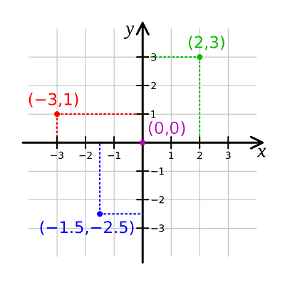

17.12 — 多维C风格数组
考虑一个像 井字棋这样的游戏。这个游戏的标准棋盘是一个3×3的网格，玩家轮流放置‘X’和‘O’符号。第一个在行、列或对角线上连成三个符号的玩家获胜。
虽然你可以将棋盘数据存储为9个独立的变量，但我们知道，当有多个相同类型的元素时，使用数组更好：
int ttt[9]; // // 一个 int 的 C 风格数组（值 0 = 空，1 = 玩家 1，2 = 玩家 2）
这定义了一个C风格数组，包含9个元素，在内存中顺序排列。我们可以想象这些元素被排列成一行值，像这样：
// ttt[0] ttt[1] ttt[2] ttt[3] ttt[4] ttt[5] ttt[6] ttt[7] ttt[8]
浮点类型的 维度 数组的维度是选择一个元素所需的索引数量。只包含一个维度的数组称为 一维数组 变为 一维数组 （有时缩写为 1d数组)。 ttt 上面是一个一维数组的例子，因为元素可以通过单个索引选择（例如 ttt[2])。
但请注意，我们的一维数组看起来并不像我们的井字棋棋盘，后者是二维的。我们可以做得更好。
二维数组
在之前的课程中，我们提到数组的元素可以是任何对象类型。这意味着数组的元素类型可以是另一个数组！定义这样的数组很简单：
int a[3][5]; // // 一个包含 3 个元素的数组，每个元素是包含 5 个 int 的数组
数组的数组称为 二维数组 （有时缩写为 2d数组），因为它有两个下标。
对于二维数组，可以方便地将第一个（左）下标视为选择行，第二个（右）下标视为选择列。从概念上讲，我们可以将这个二维数组想象成如下布局：
// col 0 col 1 col 2 col 3 col 4 // a[0][0] a[0][1] a[0][2] a[0][3] a[0][4] row 0 // a[1][0] a[1][1] a[1][2] a[1][3] a[1][4] row 1 // a[2][0] a[2][1] a[2][2] a[2][3] a[2][4] row 2
要访问二维数组的元素，我们只需使用两个下标：
a[2][3] = 7; // // a[row][col]，其中 row = 2，col = 3
因此，对于井字棋棋盘，我们可以这样定义一个二维数组：
int ttt[3][3];
现在我们有了一个3×3的元素网格，可以轻松地使用行和列索引进行操作！
多维数组
具有多个维度的数组称为 多维数组。
C++甚至支持超过2个维度的多维数组：
int threedee[4][4][4]; // // 一个 4x4x4 数组（一个包含 4 个数组的数组，每个数组包含 4 个数组，每个数组包含 4 个 int）
例如，Minecraft中的地形被划分为16x16x16的方块（称为区块段）。
支持维度高于3的数组，但很少见。
二维数组在内存中的布局方式
内存是线性的（一维），因此多维数组实际上存储为元素的顺序列表。
以下数组在内存中有两种可能的存储方式：
// // 列 0 列 1 列 2 列 3 列 4
// // [0][0] [0][1] [0][2] [0][3] [0][4] 行 0
// // [1][0] [1][1] [1][2] [1][3] [1][4] 行 1
// // [2][0] [2][1] [2][2] [2][3] [2][4] 行 2
C++使用 行主序，即元素按行逐行顺序放置在内存中，从左到右，从上到下：
[0][0] [0][1] [0][2] [0][3] [0][4] [1][0] [1][1] [1][2] [1][3] [1][4] [2][0] [2][1] [2][2] [2][3] [2][4]
其他一些语言（如Fortran）使用 列主序，元素按列逐列顺序放置在内存中，从上到下，从左到右：
[0][0] [1][0] [2][0] [0][1] [1][1] [2][1] [0][2] [1][2] [2][2] [0][3] [1][3] [2][3] [0][4] [1][4] [2][4]
在C++中，初始化数组时，元素按行主序初始化。遍历数组时，按照元素在内存中的布局顺序访问效率最高。
初始化二维数组
要初始化二维数组，最简单的方法是使用嵌套花括号，每组数字代表一行：
int array[3][5]
{
{ 1, 2, 3, 4, 5 }, // 第0行
{ 6, 7, 8, 9, 10 }, // 第1行
{ 11, 12, 13, 14, 15 } // 第2行
};
尽管某些编译器允许省略内层花括号，但我们强烈建议保留它们以提高可读性。
使用内层花括号时，缺失的初始化器将被值初始化：
int array[3][5]
{
{ 1, 2 }, // 第0行 = 1, 2, 0, 0, 0
{ 6, 7, 8 }, // 第1行 = 6, 7, 8, 0, 0
{ 11, 12, 13, 14 } // 第2行 = 11, 12, 13, 14, 0
};
已初始化的多维数组可以省略（仅）最左边的长度说明：
int array[][5]
{
{ 1, 2, 3, 4, 5 },
{ 6, 7, 8, 9, 10 },
{ 11, 12, 13, 14, 15 }
};
在这种情况下，编译器可以根据初始化器的数量计算出最左边的长度。
不允许省略非最左边的维度：
int array[][]
{
{ 1, 2, 3, 4 },
{ 5, 6, 7, 8 }
};
与普通数组一样，多维数组也可以如下初始化为 0：
int array[3][5] {};
二维数组与循环
对于一维数组，我们可以使用单个循环遍历数组中的所有元素：
#include <iostream>
int main()
{
int arr[] { 1, 2, 3, 4, 5 };
// 带索引的for循环
for (std::size_t i{0}; i < std::size(arr); ++i)
std::cout << arr[i] << ' ';
std::cout << '\n';
// 基于范围的for循环
for (auto e: arr)
std::cout << e << ' ';
std::cout << '\n';
return 0;
}
对于二维数组，我们需要两个循环：一个用于选择行，另一个用于选择列。
使用两个循环时，我们还需要确定哪个循环是外层循环，哪个是内层循环。按元素在内存中的排列顺序访问是最有效的。由于 C++ 使用行主序，行选择器应为外层循环，列选择器应为内层循环。
#include <iostream>
int main()
{
int arr[3][4] {
{ 1, 2, 3, 4 },
{ 5, 6, 7, 8 },
{ 9, 10, 11, 12 }};
// 带索引的双重for循环
for (std::size_t row{0}; row < std::size(arr); ++row) // std::size(arr) 返回行数
{
for (std::size_t col{0}; col < std::size(arr[0]); ++col) // std::size(arr[0]) 返回列数
std::cout << arr[row][col] << ' ';
std::cout << '\n';
}
// 基于范围的双重for循环
for (const auto& arow: arr) // 获取每个数组行
{
for (const auto& e: arow) // 获取该行的每个元素
std::cout << e << ' ';
std::cout << '\n';
}
return 0;
}
一个二维数组示例
让我们看一个二维数组的实际示例：
#include <iostream>
int main()
{
constexpr int numRows{ 10 };
constexpr int numCols{ 10 };
// 声明一个10x10数组
int product[numRows][numCols]{};
// 计算乘法表
// 不需要计算第0行和第0列，因为乘以0总是0
for (std::size_t row{ 1 }; row < numRows; ++row)
{
for (std::size_t col{ 1 }; col < numCols; ++col)
{
product[row][col] = static_cast<int>(row * col);
}
}
for (std::size_t row{ 1 }; row < numRows; ++row)
{
for (std::size_t col{ 1 }; col < numCols; ++col)
{
std::cout << product[row][col] << '\t';
}
std::cout << '\n';
}
return 0;
}
该程序计算并打印 1 到 9（含）之间所有值的乘法表。注意，打印表格时，for 循环从 1 开始而不是 0。这是为了省略打印 0 列和 0 行，否则它们将只是一堆 0！以下是输出：
1 2 3 4 5 6 7 8 9 2 4 6 8 10 12 14 16 18 3 6 9 12 15 18 21 24 27 4 8 12 16 20 24 28 32 36 5 10 15 20 25 30 35 40 45 6 12 18 24 30 36 42 48 54 7 14 21 28 35 42 49 56 63 8 16 24 32 40 48 56 64 72 9 18 27 36 45 54 63 72 81
笛卡尔坐标与数组索引
在几何学中， 笛卡尔坐标系 常用于描述物体的位置。在二维中，我们有两个坐标轴，通常称为“x”和“y”。“x”是水平轴，“y”是垂直轴。

在二维中，物体的笛卡尔位置可以描述为 { x, y } 对，其中 x 坐标和 y 坐标表示物体在 x 轴右侧和 y 轴上方的距离。有时 y 轴是翻转的（因此 y 坐标描述物体在 y 轴下方的距离）。
现在让我们看看 C++ 中的二维数组布局：
// // 列 0 列 1 列 2 列 3 列 4
// // [0][0] [0][1] [0][2] [0][3] [0][4] 行 0
// // [1][0] [1][1] [1][2] [1][3] [1][4] 行 1
// // [2][0] [2][1] [2][2] [2][3] [2][4] 行 2
这也是一个二维坐标系，其中元素的位置可以描述为 [row][col]（其中 col 轴是翻转的）。
虽然每个坐标系本身都相当容易理解，但从笛卡尔 { x, y } 转换为数组索引 [row][col] 有点反直觉。
关键点在于，笛卡尔系统中的 x 坐标描述的是数组索引系统中的哪个 列 被选中。相反，y 坐标描述的是哪个 行 被选中。因此，笛卡尔坐标 { x, y } 转换为数组坐标 [y][x]，这与我们预期的顺序相反！
这导致二维循环看起来像这样：
for (std::size_t y{0}; y < std::size(arr); ++y) // 外层循环是行 / y
{
for (std::size_t x{0}; x < std::size(arr[0]); ++x) // 内层循环是列 / x
std::cout << arr[y][x] << ' '; // 先按y（行）索引，再按x（列）索引
注意，在这种情况下，我们按 a[y][x]索引数组，这可能与你期望的字母顺序相反。